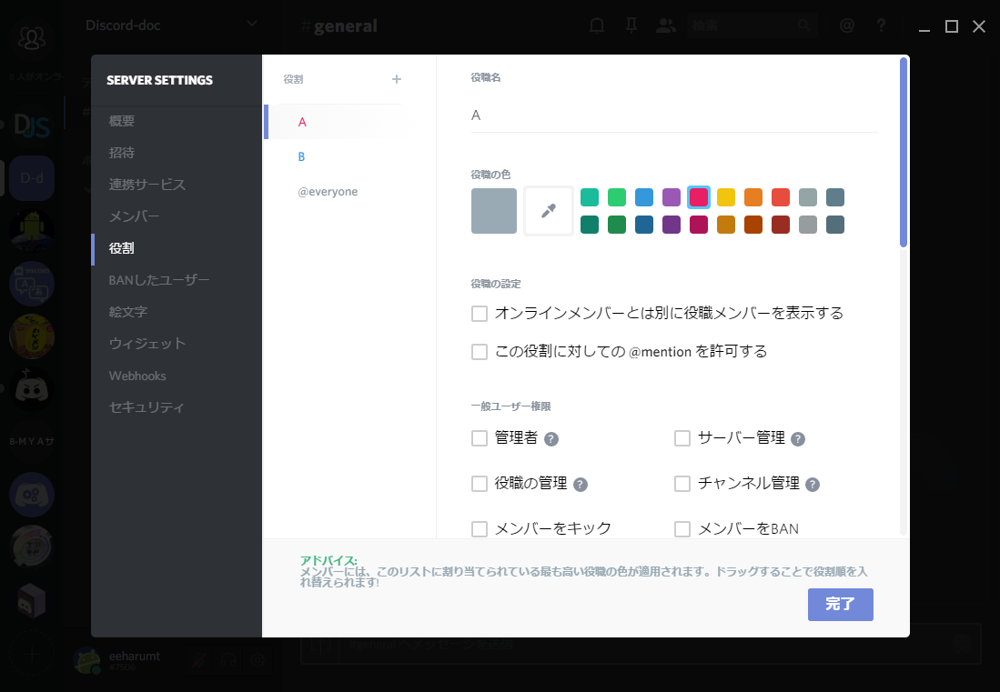
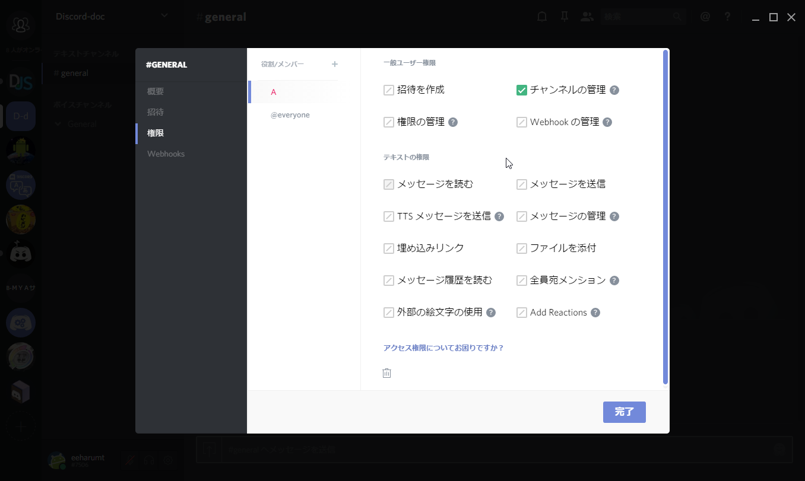

サーバーの管理関するTips¶
権限の設定¶
コミュニティでサーバーを運用するとき、 メンバーに権限を割り当てると便利です。
Discordではサーバーを立てた人はすべての権限を持っています。 逆にサーバーに参加した人はデフォルトでは最低限の権限しか持っていません。
権限の割り当ては、役職を用いた方法と個々のチャンネルで割り当てる方法があります。 役職は特定の権限を設定したグループのようなもので、 サーバー全体における振る舞いを設定でき、 役職名をメンバーに表示することもできます。
一人のユーザーに複数の役職を割り当てることもできます。 この場合、役職設定でリストの上側にある役職設定が優先されます。 （A＞B＞@evenryone）

次に、個々のチャンネルで割り当てる方法ですが、 役職または特定のユーザーのそのチャンネルで割り当てる権限を設定します。 チャンネル設定で権限を割りあては、 役職による権限よりも優先されます。 （設定したチャンネル内のみ）
